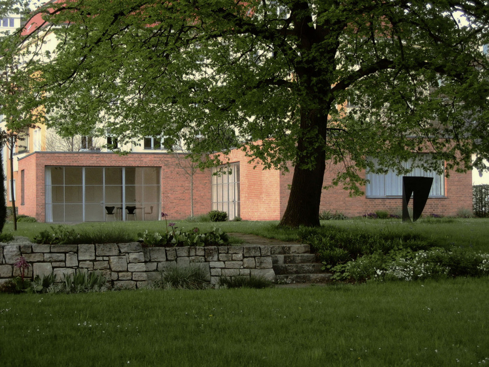

Mies' most famous buildings
-
Riehl House
The Riehl House was Mies' first building. He was twenty-one at the time and was working for Bruno Paul. Here, Mies reiterates much of Paul's classical German style with an austere stucco exterior and a pronounced roof that emphasizes the idea of shelter and home. The interior space pulled inspiration from English cottages and Japanese architecture, in addition to Paul.
-
The Barcelona Pavilion
Mies' big break came with the design for the German Pavilion at the 1929 World's Fair, held in Barcelona. Mies united sophisticated materials with a fluid open plan, which together endowed the space with an unprecedented modern elegance. The architecture's mass is balanced by a pond (featuring a sculpture by Georg Kolb) and a shallow pool on either end.
-
Villa Tugendhat
Completed in Czechoslovakia in 1930, the Villa Tugendhat is today listed as a UNESCO World Heritage Site and recently underwent an extensive two-year renovation. Mies designed the house as well as most of the furnishings, including the Tugendhat Chair, in production to this day.
-

Lemke House
The last house Mies designed for Germany before emigrating to the United States in 1938, the Lemke House was completed in 1933 and the Lemke family lived there until forced out by the Soviets in 1945. It later served as a janitor's house for the East German secret police. Today, it has been renovated into gallery space. Unique is its courtyard. No other house by Mies would feature this relation to green space.
-
Farnsworth House
It—two parallel planes held in suspension between the earth and sky by only eight steel columns—seems simple, but Mies worked through 167 drawings to come to his final, fearless design. Like Einstein’s equation, its simplicity exudes an elegance through a thorough attention to detail.
-
S. R. Crown Hall
The capstone of Mies' tenure as director of IIT's Department of Architecture, Crown Hall is among the architect's masterpieces and was named a historic landmark in 2001. The construction of this monumental building was beset by fire and delays, and probably led to Mies' dismissal as director.
-
Seagram Building
This 39-story, 516-foot tall office building was commissioned by Joseph E. Seagram & Sons Corporation, purveyors of Seagram liquors. Noted for it's amber toned windows and public plaza, the Seagram is Mies' largest work. The architect worked around New York City's zoning codes mandating that skyscrapers recess or "set back" as they rose by recessing the entire building.
-
Neue Nationalgalerie
Opened in 1968, a year before Mies passed away, the New National Gallery in Berlin cantilevers a primary exhibit hall over a glassy central pavilion. The characteristic open interior space defies the traditional, heavily-partitioned museum experience.
-
Martin Luther King Jr. Memorial Library
The Martin Luther King Jr. Memorial Library evokes the solemnity of public institutions. This is the only library and the only building in Washington D.C. designed by Mies. Inside, stacks of books echo the rows of fluorescent lights. Outside, the sheer mass of the structure is felt as it stretches down the city block. The project was completed several years after Mies' death by his architecture firm.